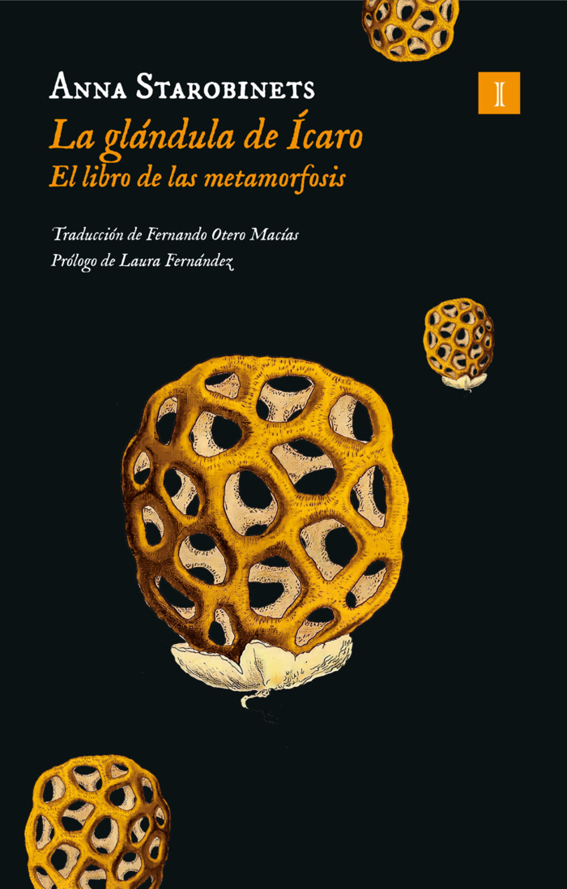

Impedimenta, 5 de junio de 2023 (ya va por la 4.ª edición), con prólogo de Laura Fernández. Antes la publicó Nevsky Prospects en 2014, hoy descatalogada
⭐ Goodreads 4,02 (~1.500 valoraciones de la edición rusa; nota de la española: no encontrada). Impedimenta la presenta como un «híbrido entre Black Mirror y Samanta Schweblin», y la reseñaron, entre otros, Babelia, Zenda y Jot Down. Los blogs destacan el terror psicológico y tecnológico, y señalan «El parásito» y «Spoki» como los relatos más perturbadores.
Es la mejor puerta de entrada a Starobinets para ti: anticipación social en piezas cortas sobre IA en la crianza, conciencia digital, control del cuerpo y mercados del deseo. Está mejor valorada que El Vivo y se lee en pocas sesiones. Le resto puntos porque tira más al horror que a la especulación social pura y porque es muy oscuro y en algún relato llega a ser repulsivo.